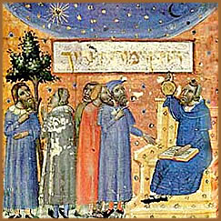
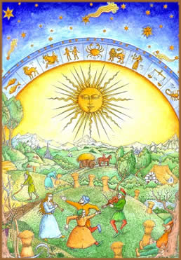

A palavra astrologia tem
origem no grego astrología e remete-se ao latim
por astrologia. Numa definição acadêmica,
pode se compreender a astrologia como "estudo ou conhecimento
da influência dos astros, especialmente de signos, no destino
e no comportamento dos homens".
Porém, sob uma definição
mais precisa, a astrologia é uma protociência; ou
seja, uma área de estudo que ainda não possui comprovação
científica, que se baseia na observação do
céu e dos astros com a finalidade de prever épocas
mais adequadas para o plantio, colheita e pesca, por exemplo.
De modo gradativo, o conceito de previsão astrológica
se estendeu além das atividades de subsistência e
passou a ser utilizado também para a política, monarquia,
aspectos sociais e outras áreas de interesse comum às
antigas civilizações.
Origem e história
A
astrologia é peça fundamental da espiritualidade,
arte e ciência, da maioria das civilizações
da antiguidade. Em rústicas representações
rupestres, é possível encontrar referências
aos astros em função de prever fenômenos naturais.
Até mesmo Stonehenge
poderia ser um observatório astrológico.
Por este motivo, torna-se impreciso especificar
um período ou região que a astrologia tenha surgido.
Mas, há registros históricos no Egito e na Suméria
(atual Iraque) que datam de 5000 a.C. e 4200 a.C.. Uma das mais
antigas referências estava na biblioteca de Assurbanipal,
na Babilônia. Ainda, considera-se que a possível
origem das observações astrológicas seja
na civilização do Vale do Indo, na Ásia Meridional.
Na China, segundo a crença, Buda, momentos
antes de sua morte, convocou os animais para se despedir, mas
apenas 12 compareceram e a astrologia chinesa foi fundamentada
nestes 12 animais. A Índia passou a utilizá-la por
volta de 1500 a.C. A astrologia dos astecas utilizava vinte signos.
Os caldeus (tribo do litoral do Golfo Pérsico e componente
do Império da Babilônia) já utilizavam a astrologia
de um modo mais complexo. Seus estudos não se apoiavam
apenas nos movimentos do Sol e da Lua, mas também de todo
um conjunto de astros, seus percursos e análises matemáticas.
O misterioso personagem Hermes Trimegisto (autor
do livro Caibalion)
era versado em astrologia. O mapa astral pessoal mais antigo remete
ao ano 409 a.C.. No ano 640 a.C, na Grécia, a astrologia
se popularizou com Aristóteles, Hiparco e Ptolomeu. Em
Roma, era peça fundamental da estrutura social e monárquica.
Mas, com a queda do Império Romano no século V e
a gradativa ascensão da Igreja Católica, a astrologia
foi relegada à condição de "superstição
pagã".
Na baixa Idade Média, a astrologia ressurgiu
e se fortaleceu com o resgate da arte e filosofia da antiguidade.
Nesse mesmo período, os conceitos matemáticos passaram
a fundamentar o estudo da astrologia. O filósofo e teólogo
alemão, Alberto Magno (1200 - 1280) potencializou o estudo
da astrologia ao tentar separá-la de sua conotação
pagã, atribuída desde o declínio do império
romano. Tomás de Aquino (1225 - 1274) interpretou que os
ensinamentos astrológicos eram complementares à
doutrina cristã. Na universidade de Bolonha, em 1125, a
astrologia atingiu a condição acadêmica.
Na Renascença, prosseguiu seu percurso sem
intervenção da Igreja. Paracelso, Copérnico,
Galileu, Newton e Nostradamus foram alguns de seus ilustres pesquisadores.
O teólogo Isidoro de Sevilha foi um dos primeiros a distinguir
a astrologia da astronomia. Esta divisão se tornou mais
nítida no século XVI.
Entre os séculos XVIII e XIX, a astrologia
continuou ganhando popularidade, mas caiu em descrédito
quando usurpadores e charlatões passaram a aplicá-la
sem recursos e conhecimento necessários. No século
seguinte, com a ascensão da Sociedade Teosófica,
liderada por Madame
Blavatsky, a astrologia começa a reconquistar
sua credibilidade. No final do século XX, é associada
aos fundamentos psicológicos do suíço Carl
Jung e, paralelamente, assume uma função menos voltada
para a previsão e consolida-se como uma ferramenta utilizada
também em técnicas psicológicas de autoconhecimento.
Astrologias
Não
há uma fórmula distinta a qual possa ser aplicada
para a prática astrológica. Por ser um campo de
estudo tão antigo e amplamente difundido, é natural
que cada cultura, período histórico e praticante,
desenvolvam métodos próprios.
Pode-se citar como exemplo a Astrologia Chinesa,
que está diretamente associada aos 12 signos do zodíaco
chinês; sendo estes signos, representações
de animais como o tigre, o dragão e o cavalo; além
da combinação dos cinco elementos (água,
madeira, fogo, metal e terra) e, obviamente, o posicionamento
e o percurso de corpos celestes.
Ainda, a Jyotisha (que pode ser compreendida
como ciência dos corpos estelares) é variação
indiana da astrologia que utiliza o conceito de Zodíaco
Sideral (com a posição astronômica atual dos
corpos celestes) é uma importante prática dentro
do complexo conjunto do hinduísmo. A astrologia ocidental,
que utiliza o Zodíaco Tropical (representando a posição
astronômica no século I), é baseada no sistema
da Grécia antiga e na interpretação de Blavatsky
no século XX. Há também a astrologia cabalística
que combina os fundamentos da astrologia oriental com a o sistema
religioso-filosófico da Cabala.
Entretanto, todos estão, de uma forma abrangente,
solidificados sob uma mesma base: a posição e o
percurso dos astros e planetas, como o Sol, a Lua e a Terra; e
as relações matemáticas (trigonométricas)
e geométricas entre este posicionamento e a movimentação.
Esta interpretação baseia-se em três itens
fundamentais: os aspectos astrológicos (relativos à
trigonometria); posicionamento em relação aos signos
do zodíaco e posicionamento em relação ao
horizonte (neste caso, zênite e nadir; ou seja, parte superior
e inferior da esfera celeste segundo o observador).
A conclusão (ou resultado) da combinação
destes elementos pode receber diferentes abordagens. Por exemplo,
a Carta Astrológica (também conhecida por
Mapa Natal e Carta Natal, entre outras denominações)
é a representação gráfica desta conclusão.
Uma pessoa (um país ou uma cidade, por exemplo) é
estabelecida como centro de um mapa celeste circular dividido
pelas 12 casas do zodíaco. A configuração
astronômica no momento do "nascimento" constitui
seu mapa astrológico. Através da abordagem da Carta
Astrológica, que é também abordagem mais
popular da Astrologia, é possível determinar características
pessoais, constituição de um país, desenvolvimento
de um governo, entre outros. Em outro caso, segundo a abordagem
da Astrologia Eletiva, é possível determinar
o momento mais adequado para iniciar um empreendimento.
Mecanismo
astrológico
Alberto Magno interpretava que os astros não
influenciavam a alma humana; porém, eram capazes de influenciar
o corpo físico e a vontade. Cornelius
Agrippa (suposto autor do Heptameron)
interpretava o universo como uma unidade (Unus Mundus)
no qual o que ocorre no mundo celestial tem impacto na esfera
dos fenômenos e é intermediado pela esfera dos corpos
celestes. Deste modo, a relação entre o campo de
atuação dos corpos celestes e o campo de atuação
humana, não é apenas uma casualidade; mas sim uma
analogia ou sincronicidade.
Correntes de estudo mais recentes buscam traçar
uma linha de conectividade entre a astrologia, em seu "estado
puro", e a comprovação científica. Desse
modo, o posicionamento dos astros, data e hora de nascimento,
criariam "campos eletromagnéticos" que influenciariam
nas características e desenvolvimento de uma pessoa, por
exemplo. Essas pesquisas utilizam métodos de estatística
e probabilidade, analogia e sincronismo. Portanto, duas pessoas
que nascem em condições astrais semelhantes, têm
(teoricamente) as mesmas características de personalidade
e tendem a seguir as mesmas profissões etc.
Um paralelo entre astrologia e biologia determina
uma relação entre os ciclos circadianos
(período de um dia no qual, por influência da luz
solar, se baseia o ciclo biológico humano). A variedade
de raios cósmicos que chegam à Terra também
são alvos de estudos científicos e astrológicos.
Atualmente, o conceito mais amplo da astrologia
já está bastante distante do que era há poucos
séculos. Ainda é considerada, por alguns, como apenas
uma superstição explorada com finalidades lucrativas.
Porém, independentemente de sua classificação
acadêmica ou de idéias superficiais, a astrologia
consolida-se como uma das mais significativas vertentes de estudo
e pesquisa de grupos esotéricos e uma importante ferramenta
que complementa outras áreas de estudo, sejam elas científicas
ou não.
Por
Spectrum